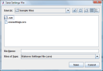

You can quickly save current settings in the interface for future use. See Load Settings Feature. Go to the menu bar and click File and then Save and then Settings. On the dialog box, enter a file name and choose a location.